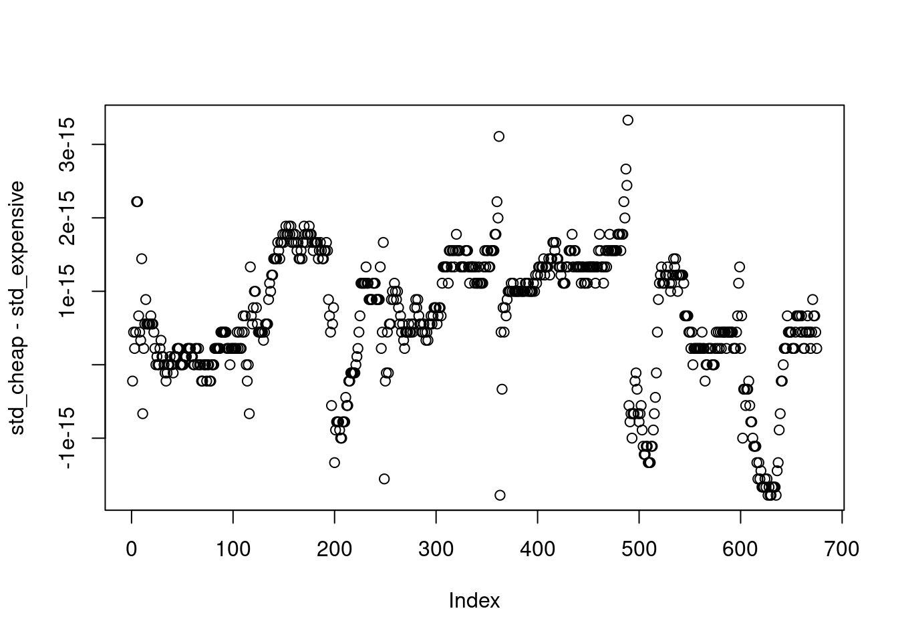
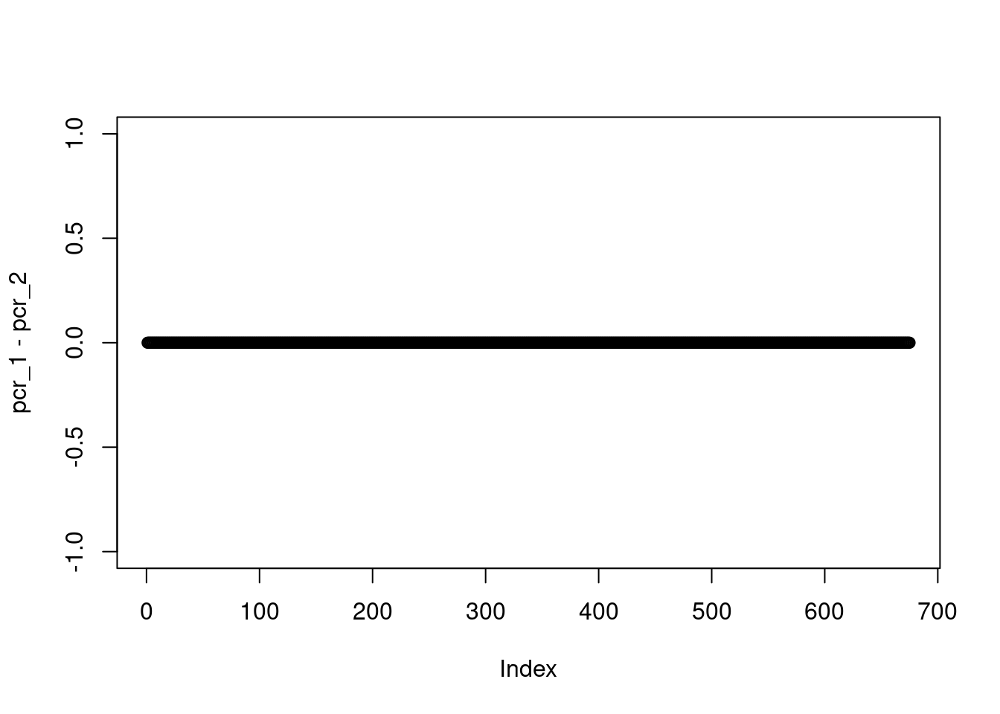

Below we set some global options for all code chunks in this
document.
rm(list = ls())
# Set seed for reproducibility
set.seed(593)
# Set global options for all code chunks
knitr::opts_chunk$set(
# Disable messages printed by R code chunks
message = FALSE,
# Disable warnings printed by R code chunks
warning = FALSE,
# Show R code within code chunks in output
echo = TRUE,
# Include both R code and its results in output
include = TRUE,
# Evaluate R code chunks
eval = TRUE,
# Enable caching of R code chunks for faster rendering
cache = FALSE,
# Align figures in the center of the output
fig.align = "center",
# Enable retina display for high-resolution figures
retina = 2,
# Show errors in the output instead of stopping rendering
error = TRUE,
# Do not collapse code and output into a single block
collapse = FALSE
)
# Start the figure counter
fig_count <- 0
# Define the captioner function
captioner <- function(caption) {
fig_count <<- fig_count + 1
paste0("Figure ", fig_count, ": ", caption)
}
# Define the function to truncate a number to two decimal places
truncate_to_two <- function(x) {
floor(x * 100) / 100
}
Below we load the necessary libraries and define the auxiliary
functions.
library(rSPDE)
library(MetricGraph)
library(sp)
library(osmdata)
library(dplyr)
library(plotly)
library(scales)
library(patchwork)
library(tidyr)
library(here)
library(rmarkdown)
# Cite all loaded packages
library(grateful)
rtilde_matern_interval <- function(kappa, tau, le, t1, t2) (1 / (2 * kappa * tau^2 * sinh(kappa * le))) * (cosh(kappa * (le - abs(t1 - t2))) + cosh(kappa * (t1 + t2 - le)))
sparse_A <- function(n) bandSparse(n-1, n, k = c(0, 1), diagonals = list(rep(1, n), rep(-1, n - 1)))
Let’s build a small graph to illustrate how to compute the marginal
standard deviation.
{r}
edge1 <- rbind(c(0,0), c(1,0))[2:1, ]
theta <- seq(from = -pi, to = pi,length.out = 100)
edge2 <- cbind(1+1/pi+cos(theta)/pi, sin(theta)/pi)
edge3 <- rbind(c(-1,-1), c(1,0))[2:1, ]
edges <- list(edge1, edge2, edge3)
graph <- metric_graph$new(edges = edges)
{r}
edge <- rbind(c(0,0),c(1,0))
edges <- list(edge)
graph <- metric_graph$new(edges = edges)
{r}
edges_roots_of_unity <- function(n, length = 10) {
x_coords <- cos(2 * pi * (0:(n-1)) / n)
y_coords <- sin(2 * pi * (0:(n-1)) / n)
return(lapply(1:n, function(i) {rbind(c(0, 0), c(length*x_coords[i], length*y_coords[i]))}))
}
n <- 10
my_length <- 2
graph <- metric_graph$new(edges = edges_roots_of_unity(n, length = my_length))
a <- 3
b <- 12
edge2_x <- runif(1, 8, 12)
edge1 <- rbind(c(0,0),c(-runif(1, a, b),0))
edge2 <- rbind(c(0,0),c(edge2_x,0))
edge3 <- rbind(c(edge2_x,0),c(edge2_x + runif(1, a, b),0))
edge4 <- rbind(c(edge2_x,0),c(edge2_x + runif(1, a, b),-runif(1, a, b)))
edge5 <- rbind(c(edge2_x,0),c(edge2_x + runif(1, a, b),runif(1, a, b)))
edge6 <- rbind(c(0,0),c(-runif(1, a, b),-runif(1, a, b)))
edge7 <- rbind(c(0,0),c(-runif(1, a, b), runif(1, a, b)))
edges <- list(edge1, edge2, edge3, edge4, edge5, edge6, edge7)
graph <- metric_graph$new(edges = edges)
{r}
edges <- logo_lines()
graph <- metric_graph$new(edges = edges, perform_merges = TRUE)
{r}
call <- opq(bbox = c(39.0884, 22.33, 39.115, 22.3056))
call <- add_osm_feature(call, key = "highway",value=c("motorway",
"primary","secondary",
"tertiary",
"residential"))
data <- osmdata_sf(call)
graph <- graph_components$new(data)
graph <- graph$get_largest()
graph$prune_vertices()
graph_copy <- graph$clone()
graph_pcr_1 <- graph$clone()
graph_pcr_2 <- graph$clone()
graph$build_mesh(h = 0.1)
sigma <- 1
range <- 1
nu <- 1/2
kappa <- sqrt(8*nu)/range
tau <-sqrt(gamma(nu) / (sigma^2 * kappa^(2*nu) * (4*pi)^(1/2) * gamma(nu + 1/2)))
alpha <- nu + 1/2 #alpha = 1
rtilde_int <- function(t1, t2, le) rtilde_matern_interval(kappa = kappa, tau = tau, le, t1, t2)
get_marginal_std <- function(kappa, tau, graph){
V <- graph$V
E <- graph$E
degrees <- graph$get_degrees()
edge_lengths <- as.vector(graph$get_edge_lengths())
VtE <- graph$mesh$VtE
if(nrow(V) == 2 & nrow(E) == 1){
aux_function <- function(VtErow) {
edge <- VtErow[1]
s <- VtErow[2]
le <- edge_lengths[edge]
return(rtilde_int(le*s, le*s, le))
}
} else {
# Build matrix U
U <- matrix(nrow = 0, ncol = 2)
for (vertex in seq_len(nrow(V))) {
if (degrees[vertex] > 1) {
edges_leaving <- cbind(which(E[,1] %in% vertex), 0)
edges_entering <- cbind(which(E[,2] %in% vertex), 1)
if (sum(dim(edges_leaving)) == 2 ) {edges_leaving <- NULL}
if (sum(dim(edges_entering)) == 2 ) {edges_entering <- NULL}
constraints <- rbind(edges_leaving, edges_entering)
ordered_constraints <- constraints[order(constraints[, 1], constraints[, 2]),]
U <- rbind(U, ordered_constraints)
}
}
# Build matrix A
A <- bdiag(lapply(degrees[degrees >1], sparse_A))
# Build matrix Sigma
edge_lengths_in_U <- edge_lengths[U[, 1]]
s_diag <- edge_lengths_in_U*U[, 2]
diag <- as.vector(mapply(rtilde_int, t1 = s_diag, t2 = s_diag, le = edge_lengths_in_U))
Sigma <- Diagonal(x = diag)
for (edge in seq_len(nrow(E))) {
pos <- which(U[, 1] == edge)
if (length(pos) > 1) {
Sigma[pos[1], pos[2]] <- Sigma[pos[2], pos[1]] <- rtilde_int(t1 = 0, t2 = edge_lengths[edge], le = edge_lengths[edge])
}
}
ASigmaAt <- A %*% Sigma %*% t(A)
aux_function <- function(VtErow) {
edge <- VtErow[1]
s <- VtErow[2]
le <- edge_lengths[edge]
pos <- which(U[, 1] == edge)
cc <- mapply(rtilde_int, t1 = le*s, t2 = U[pos,2]*le, le = le)
v <- if(length(pos) == 1) as.vector(A[, pos] * cc) else as.vector(A[, pos] %*% cc)
return(rtilde_int(le*s, le*s, le) - t(v) %*% solve(ASigmaAt, v))
}
}
return(sqrt(apply(X = VtE, MARGIN = 1, FUN = aux_function)))
}
compute_pcr_2v <- function(cov_matrix, graph, cor_threshold = 0.1) {
# Compute the correlation matrix
cor_matrix <-cov2cor(cov_matrix)
# Compute the geodesic distance matrix
graph$compute_geodist_mesh()
# Extract the geodesic distance matrix
dist_matrix <- graph$mesh$geo_dist
# Initialize the vector to store the practical correlation range
pcr <- numeric(dim(cor_matrix)[1])
process_row <- function(row_index) {
# For each row_index, create an auxiliary matrix aux_mat with the correlation and geodesic distance
aux_mat <- cbind(cor_matrix[row_index, ], dist_matrix[row_index, ])
# Order the auxiliary matrix by the geodesic distance
ordered_aux_mat <- aux_mat[order(aux_mat[, 2]), ]
# Filter the auxiliary ordered matrix by the correlation threshold
filtered_aux_mat <- ordered_aux_mat[ordered_aux_mat[,1] < cor_threshold, ]
if (nrow(filtered_aux_mat) > 0) {
# Return the minimum geodesic distance such that the correlation is below the threshold
return(filtered_aux_mat[1, 2])
} else {
# If the condition is not satisfied, record the minimum correlation value and return an error message
min <- min(aux_mat[, 1])
stop(paste0("The condition cor_matrix[row_index, ] < cor_threshold is not satisfied for row_index = ",
row_index, ". Increase cor_threshold. The minimum value of cor_matrix[row_index, ] is ",
min))
}
}
pcr <- sapply(1:dim(cor_matrix)[1], process_row)
return(pcr)
}
std_cheap <- get_marginal_std(kappa = kappa, tau = tau, graph = graph)
mesh_loc <- graph$get_mesh_locations() %>%
as.data.frame() %>%
mutate(y = 1) %>%
rename(edge_number = V1, distance_on_edge = V2)
graph_copy$add_observations(mesh_loc,
edge_number = "edge_number",
distance_on_edge = "distance_on_edge",
data_coords = "PtE",
normalized = TRUE,
clear_obs = TRUE)
graph_copy$observation_to_vertex()
Q <- spde_precision(kappa = kappa,
tau = tau,
alpha = alpha,
graph = graph_copy,
BC = 0) # BC = 1
Sigma <- solve(Q)
std_expensive <- sqrt(diag(Sigma))
nonstat_cov <- Matrix::Diagonal(x = 1/std_cheap)%*% Sigma %*%Matrix::Diagonal(x = 1/std_cheap)
nonstat_est_sigma <- sqrt(Matrix::diag(nonstat_cov))
sum(abs(std_cheap - std_expensive))
## [1] 6.007417e-13
plot(std_cheap - std_expensive)

graph_pcr_1$build_mesh(h = 0.1)
graph_pcr_2$build_mesh(h = 0.1)
pcr_1 <- compute_pcr_2v(cov_matrix = Sigma, graph = graph_pcr_1, cor_threshold = 0.1)
pcr_2 <- compute_pcr_2v(cov_matrix = nonstat_cov, graph = graph_pcr_2, cor_threshold = 0.1)
sum(abs(pcr_1 - pcr_2))
## [1] 0

The following are the plots for the marginal standard deviation.
a = 2.35
graph$plot_function(X = std_expensive, vertex_size = 1, type = "plotly", line_color = "darkgreen", line_width = 3, edge_color = "black", edge_width = 3) %>% # true one
graph$plot_function(X = std_cheap, p = ., vertex_size = 1, type = "plotly", line_color = "blue", line_width = 3, edge_color = "black", edge_width = 3) %>% # approx one
config(mathjax = 'cdn') %>%
layout(title = TeX("\\sigma(s)"),
font = list(family = "Palatino"),
showlegend = FALSE,
scene = list(
aspectratio = list(x = 1, y = 1, z = 1),
camera = list(
eye = list(x = -0.7*a, y = 0.7*a, z = 0.7*a))))
graph$plot_function(X = nonstat_est_sigma, vertex_size = 1, type = "plotly", line_color = "darkgreen", line_width = 3, edge_color = "black", edge_width = 3) %>%
config(mathjax = 'cdn') %>%
layout(title = TeX("\\sigma_u(s)"),
font = list(family = "Palatino"),
showlegend = FALSE,
scene = list(
aspectratio = list(x = 1, y = 1, z = 1),
camera = list(
eye = list(x = -0.7*a, y = 0.7*a, z = 0.7*a))))
graph$plot_function(X = pcr_1, vertex_size = 1, type = "plotly", line_color = "red", line_width = 3, edge_color = "black", edge_width = 3) %>% # true one
graph$plot_function(X = pcr_2, p = ., vertex_size = 1, type = "plotly", line_color = "red", line_width = 3, edge_color = "black", edge_width = 3) %>% # approx one
config(mathjax = 'cdn') %>%
layout(title = TeX("\\rho(s), \\rho_u(s)"),
font = list(family = "Palatino"),
showlegend = FALSE,
scene = list(
aspectratio = list(x = 1, y = 1, z = 1),
camera = list(
eye = list(x = -0.7*a, y = 0.7*a, z = 0.7*a))))
The following are the corresponding plots for the practical
correlation range.
a = 2.35
graph$plot_function(X = pcr_1, vertex_size = 1, type = "plotly", line_color = "blue", line_width = 3, edge_color = "black", edge_width = 3) %>%
config(mathjax = 'cdn') %>%
layout(title = TeX("\\rho(s)"),
font = list(family = "Palatino"),
showlegend = FALSE,
scene = list(
aspectratio = list(x = 1, y = 1, z = 1),
camera = list(
eye = list(x = -0.7*a, y = 0.7*a, z = 0.7*a))))
graph$plot_function(X = pcr_2, vertex_size = 1, type = "plotly", line_color = "darkgreen", line_width = 3, edge_color = "black", edge_width = 3) %>%
config(mathjax = 'cdn') %>%
layout(title = TeX("\\rho_u(s)"),
font = list(family = "Palatino"),
showlegend = FALSE,
scene = list(
aspectratio = list(x = 1, y = 1, z = 1),
camera = list(
eye = list(x = -0.7*a, y = 0.7*a, z = 0.7*a))))
graph$plot_function(X = pcr_1 - pcr_2, vertex_size = 1, type = "plotly", line_color = "red", line_width = 3, edge_color = "black", edge_width = 3) %>%
config(mathjax = 'cdn') %>%
layout(title = TeX("\\rho_u(s)"),
font = list(family = "Palatino"),
showlegend = FALSE,
scene = list(
aspectratio = list(x = 1, y = 1, z = 1),
camera = list(
eye = list(x = -0.7*a, y = 0.7*a, z = 0.7*a))))
graph$plot_function(X = Sigma[300,], vertex_size = 1, type = "plotly", line_color = "red", line_width = 3, edge_color = "black", edge_width = 3) %>%
graph$plot_function(X = Sigma[5,], p = ., vertex_size = 1, type = "plotly", line_color = "darkgreen", line_width = 3, edge_color = "black", edge_width = 3) %>%
graph$plot_function(X = Sigma[3,], p = ., vertex_size = 1, type = "plotly", line_color = "blue", line_width = 3, edge_color = "black", edge_width = 3) %>%
config(mathjax = 'cdn') %>%
layout(title = TeX("\\rho_u(s)"),
font = list(family = "Palatino"),
showlegend = FALSE,
scene = list(
aspectratio = list(x = 1, y = 1, z = 1),
camera = list(
eye = list(x = -0.7*a, y = 0.7*a, z = 0.7*a))))
References
cite_packages(output = "paragraph", out.dir = ".")
We used R version 4.4.1 (R Core Team
2024a) and the following R packages: cowplot v. 1.1.3 (Wilke 2024), ggmap v. 4.0.0.900 (Kahle and Wickham 2013), ggpubr v. 0.6.0 (Kassambara 2023), ggtext v. 0.1.2 (Wilke and Wiernik 2022), grid v. 4.4.1 (R Core Team 2024b), here v. 1.0.1 (Müller 2020), htmltools v. 0.5.8.1 (Cheng et al. 2024), INLA v. 24.12.11 (Rue, Martino, and Chopin 2009; Lindgren, Rue, and
Lindström 2011; Martins et al. 2013; Lindgren and Rue 2015; De Coninck
et al. 2016; Rue et al. 2017; Verbosio et al. 2017; Bakka et al. 2018;
Kourounis, Fuchs, and Schenk 2018), inlabru v. 2.12.0.9002 (Yuan et al. 2017; Bachl et al. 2019), knitr v.
1.48 (Xie 2014, 2015, 2024), latex2exp v.
0.9.6 (Meschiari 2022), Matrix v. 1.6.5
(Bates, Maechler, and Jagan 2024),
MetricGraph v. 1.4.0.9000 (Bolin, Simas, and
Wallin 2023b, 2023a, 2023c, 2024; Bolin et al. 2024),
OpenStreetMap v. 0.4.0 (Fellows and JMapViewer
library by Jan Peter Stotz 2023), osmdata v. 0.2.5 (Mark Padgham et al. 2017), patchwork v. 1.2.0
(Pedersen 2024), plotly v. 4.10.4 (Sievert 2020), plotrix v. 3.8.4 (J 2006), reshape2 v. 1.4.4 (Wickham 2007), rmarkdown v. 2.28 (Xie, Allaire, and Grolemund 2018; Xie, Dervieux, and
Riederer 2020; Allaire et al. 2024), rSPDE v. 2.4.0.9000 (Bolin and Kirchner 2020; Bolin and Simas 2023; Bolin,
Simas, and Xiong 2024), scales v. 1.3.0 (Wickham, Pedersen, and Seidel 2023), sf v.
1.0.19 (E. Pebesma 2018; E. Pebesma and Bivand
2023), sp v. 2.1.4 (E. J. Pebesma and
Bivand 2005; Bivand, Pebesma, and Gomez-Rubio 2013), tidyverse v.
2.0.0 (Wickham et al. 2019), viridis v.
0.6.4 (Garnier et al. 2023), xaringanExtra
v. 0.8.0 (Aden-Buie and Warkentin
2024).
Allaire, JJ, Yihui Xie, Christophe Dervieux, Jonathan McPherson, Javier
Luraschi, Kevin Ushey, Aron Atkins, et al. 2024.
rmarkdown: Dynamic Documents for r.
https://github.com/rstudio/rmarkdown.
Bachl, Fabian E., Finn Lindgren, David L. Borchers, and Janine B.
Illian. 2019.
“inlabru: An
R Package for Bayesian Spatial Modelling from
Ecological Survey Data.” Methods in Ecology and
Evolution 10: 760–66.
https://doi.org/10.1111/2041-210X.13168.
Bakka, Haakon, Håvard Rue, Geir-Arne Fuglstad, Andrea I. Riebler, David
Bolin, Janine Illian, Elias Krainski, Daniel P. Simpson, and Finn K.
Lindgren. 2018.
“Spatial Modelling with INLA:
A Review.” WIRES (Invited Extended Review)
xx (Feb): xx–.
http://arxiv.org/abs/1802.06350.
Bates, Douglas, Martin Maechler, and Mikael Jagan. 2024.
Matrix: Sparse and Dense Matrix Classes and
Methods.
https://CRAN.R-project.org/package=Matrix.
Bivand, Roger S., Edzer Pebesma, and Virgilio Gomez-Rubio. 2013.
Applied Spatial Data Analysis with R, Second
Edition. Springer, NY.
https://asdar-book.org/.
Bolin, David, and Kristin Kirchner. 2020.
“The Rational
SPDE Approach for Gaussian Random Fields with
General Smoothness.” Journal of Computational and Graphical
Statistics 29 (2): 274–85.
https://doi.org/10.1080/10618600.2019.1665537.
Bolin, David, Mihály Kovács, Vivek Kumar, and Alexandre B. Simas. 2024.
“Regularity and Numerical Approximation of Fractional Elliptic
Differential Equations on Compact Metric Graphs.” Mathematics
of Computation 93 (349): 2439–72.
https://doi.org/10.1090/mcom/3929.
Bolin, David, and Alexandre B. Simas. 2023.
rSPDE: Rational Approximations of Fractional
Stochastic Partial Differential Equations.
https://CRAN.R-project.org/package=rSPDE.
Bolin, David, Alexandre B. Simas, and Jonas Wallin. 2023a.
“Markov
Properties of Gaussian Random Fields on Compact Metric Graphs.”
arXiv Preprint arXiv:2304.03190.
https://doi.org/10.48550/arXiv.2304.03190.
———. 2023b.
MetricGraph: Random Fields on Metric
Graphs.
https://CRAN.R-project.org/package=MetricGraph.
———. 2023c.
“Statistical Inference for Gaussian Whittle-Matérn
Fields on Metric Graphs.” arXiv Preprint
arXiv:2304.10372.
https://doi.org/10.48550/arXiv.2304.10372.
———. 2024.
“Gaussian Whittle-Matérn Fields on Metric
Graphs.” Bernoulli 30 (2): 1611–39.
https://doi.org/10.3150/23-BEJ1647.
Bolin, David, Alexandre B. Simas, and Zhen Xiong. 2024.
“Covariance-Based Rational Approximations of Fractional SPDEs for
Computationally Efficient Bayesian Inference.” Journal of
Computational and Graphical Statistics 33 (1): 64–74.
https://doi.org/10.1080/10618600.2023.2231051.
De Coninck, Arne, Bernard De Baets, Drosos Kourounis, Fabio Verbosio,
Olaf Schenk, Steven Maenhout, and Jan Fostier. 2016.
“Needles: Toward Large-Scale Genomic Prediction with
Marker-by-Environment Interaction.” Genetics 203 (1):
543–55.
https://doi.org/10.1534/genetics.115.179887.
Fellows, Ian, and using the JMapViewer library by Jan Peter Stotz. 2023.
OpenStreetMap: Access to Open Street Map Raster
Images.
https://CRAN.R-project.org/package=OpenStreetMap.
Garnier, Simon, Ross, Noam, Rudis, Robert, Camargo, et al. 2023.
viridis(Lite) - Colorblind-Friendly
Color Maps for r.
https://doi.org/10.5281/zenodo.4679423.
J, Lemon. 2006. “Plotrix: A Package in the Red Light
District of r.” R-News 6 (4): 8–12.
Kahle, David, and Hadley Wickham. 2013.
“ggmap: Spatial Visualization with Ggplot2.”
The R Journal 5 (1): 144–61.
https://journal.r-project.org/archive/2013-1/kahle-wickham.pdf.
Kassambara, Alboukadel. 2023.
ggpubr:
“ggplot2” Based Publication
Ready Plots.
https://CRAN.R-project.org/package=ggpubr.
Kourounis, D., A. Fuchs, and O. Schenk. 2018.
“Towards the Next
Generation of Multiperiod Optimal Power Flow Solvers.” IEEE
Transactions on Power Systems PP (99): 1–10.
https://doi.org/10.1109/TPWRS.2017.2789187.
Lindgren, Finn, and Håvard Rue. 2015.
“Bayesian Spatial Modelling
with R-INLA.” Journal of
Statistical Software 63 (19): 1–25.
http://www.jstatsoft.org/v63/i19/.
Lindgren, Finn, Håvard Rue, and Johan Lindström. 2011. “An
Explicit Link Between Gaussian Fields and
Gaussian Markov Random Fields: The Stochastic
Partial Differential Equation Approach (with Discussion).”
Journal of the Royal Statistical Society B 73 (4): 423–98.
Mark Padgham, Bob Rudis, Robin Lovelace, and Maëlle Salmon. 2017.
“Osmdata.” Journal of Open Source Software 2 (14):
305.
https://doi.org/10.21105/joss.00305.
Martins, Thiago G., Daniel Simpson, Finn Lindgren, and Håvard Rue. 2013.
“Bayesian Computing with INLA: New
Features.” Computational Statistics and Data Analysis
67: 68–83.
Meschiari, Stefano. 2022.
Latex2exp: Use LaTeX Expressions in
Plots.
https://CRAN.R-project.org/package=latex2exp.
Müller, Kirill. 2020.
here: A Simpler
Way to Find Your Files.
https://CRAN.R-project.org/package=here.
Pebesma, Edzer. 2018.
“Simple Features for R:
Standardized Support for Spatial Vector Data.”
The R Journal 10 (1): 439–46.
https://doi.org/10.32614/RJ-2018-009.
Pebesma, Edzer J., and Roger Bivand. 2005.
“Classes and Methods
for Spatial Data in R.” R News 5 (2): 9–13.
https://CRAN.R-project.org/doc/Rnews/.
Pebesma, Edzer, and Roger Bivand. 2023.
Spatial
Data Science: With applications in R.
Chapman and
Hall/CRC.
https://doi.org/10.1201/9780429459016.
Pedersen, Thomas Lin. 2024.
patchwork:
The Composer of Plots.
https://CRAN.R-project.org/package=patchwork.
R Core Team. 2024a.
R: A Language and Environment for
Statistical Computing. Vienna, Austria: R Foundation for
Statistical Computing.
https://www.R-project.org/.
———. 2024b.
R: A Language and Environment for
Statistical Computing. Vienna, Austria: R Foundation for
Statistical Computing.
https://www.R-project.org/.
Rue, Håvard, Sara Martino, and Nicholas Chopin. 2009. “Approximate
Bayesian Inference for Latent Gaussian Models
Using Integrated Nested Laplace Approximations (with
Discussion).” Journal of the Royal Statistical Society B
71: 319–92.
Rue, Håvard, Andrea I. Riebler, Sigrunn H. Sørbye, Janine B. Illian,
Daniel P. Simpson, and Finn K. Lindgren. 2017.
“Bayesian Computing
with INLA: A Review.” Annual
Reviews of Statistics and Its Applications 4 (March): 395–421.
http://arxiv.org/abs/1604.00860.
Sievert, Carson. 2020.
Interactive Web-Based Data Visualization with
r, Plotly, and Shiny. Chapman; Hall/CRC.
https://plotly-r.com.
Verbosio, Fabio, Arne De Coninck, Drosos Kourounis, and Olaf Schenk.
2017.
“Enhancing the Scalability of Selected Inversion
Factorization Algorithms in Genomic Prediction.” Journal of
Computational Science 22 (Supplement C): 99–108.
https://doi.org/10.1016/j.jocs.2017.08.013.
Wickham, Hadley. 2007.
“Reshaping Data with the reshape Package.” Journal of
Statistical Software 21 (12): 1–20.
http://www.jstatsoft.org/v21/i12/.
Wickham, Hadley, Mara Averick, Jennifer Bryan, Winston Chang, Lucy
D’Agostino McGowan, Romain François, Garrett Grolemund, et al. 2019.
“Welcome to the tidyverse.”
Journal of Open Source Software 4 (43): 1686.
https://doi.org/10.21105/joss.01686.
Wickham, Hadley, Thomas Lin Pedersen, and Dana Seidel. 2023.
scales: Scale Functions for Visualization.
https://CRAN.R-project.org/package=scales.
Wilke, Claus O. 2024.
cowplot:
Streamlined Plot Theme and Plot Annotations for “ggplot2”.
https://CRAN.R-project.org/package=cowplot.
Wilke, Claus O., and Brenton M. Wiernik. 2022.
ggtext: Improved Text Rendering Support for
“ggplot2”.
https://CRAN.R-project.org/package=ggtext.
Xie, Yihui. 2014. “knitr: A
Comprehensive Tool for Reproducible Research in R.”
In Implementing Reproducible Computational Research, edited by
Victoria Stodden, Friedrich Leisch, and Roger D. Peng. Chapman;
Hall/CRC.
———. 2015.
Dynamic Documents with R and Knitr. 2nd
ed. Boca Raton, Florida: Chapman; Hall/CRC.
https://yihui.org/knitr/.
———. 2024.
knitr: A General-Purpose
Package for Dynamic Report Generation in r.
https://yihui.org/knitr/.
Xie, Yihui, J. J. Allaire, and Garrett Grolemund. 2018.
R Markdown:
The Definitive Guide. Boca Raton, Florida: Chapman; Hall/CRC.
https://bookdown.org/yihui/rmarkdown.
Xie, Yihui, Christophe Dervieux, and Emily Riederer. 2020.
R
Markdown Cookbook. Boca Raton, Florida: Chapman; Hall/CRC.
https://bookdown.org/yihui/rmarkdown-cookbook.
Yuan, Yuan, Bachl, Fabian E., Lindgren, Finn, Borchers, et al. 2017.
“Point Process Models for Spatio-Temporal Distance Sampling Data
from a Large-Scale Survey of Blue Whales.” Ann. Appl.
Stat. 11 (4): 2270–97.
https://doi.org/10.1214/17-AOAS1078.
